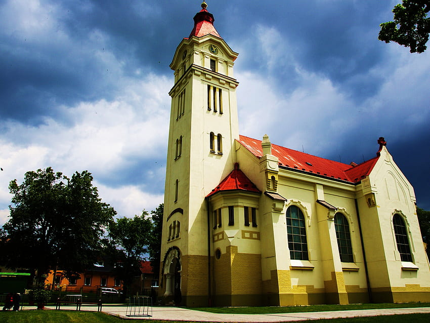

HKBP Srengseng Sawah
HKBP Srengseng Sawah adalah sebuah gereja Protestan yang berada di bawah naungan Huria Kristen Batak Protestan (HKBP), sebuah denominasi gereja terbesar di Indonesia, khususnya di kalangan masyarakat Batak. Terletak di wilayah Srengseng Sawah, gereja ini berfungsi sebagai pusat ibadah, pembinaan spiritual, serta kegiatan sosial dan komunitas bagi jemaatnya. Sebagai rumah bagi umat Kristen Batak di area tersebut, HKBP Srengseng Sawah memiliki berbagai program rutin seperti ibadah Minggu, latihan paduan suara, serta doa bersama yang dirancang untuk memperkuat iman dan kebersamaan antaranggota jemaat. Di samping kegiatan mingguan, gereja ini juga mengadakan berbagai acara tahunan seperti retreat, perayaan Natal, dan kebaktian padang yang menjadi momen penting untuk bersekutu dan memperdalam nilai-nilai Kristen. Dengan fokus pada pelayanan dan pengembangan spiritual, HKBP Srengseng Sawah menjadi tempat yang hangat dan mendukung bagi jemaatnya, serta memiliki peran aktif dalam memajukan nilai-nilai kekeluargaan dan kebersamaan di lingkungan sekitarnya.